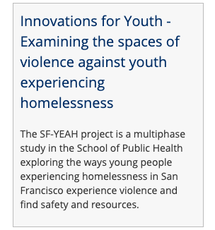
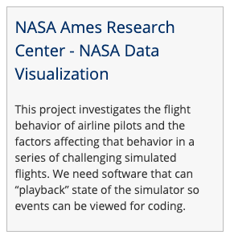
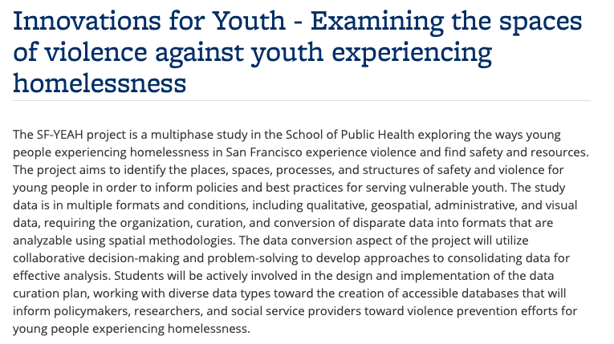
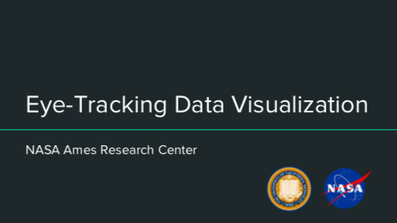
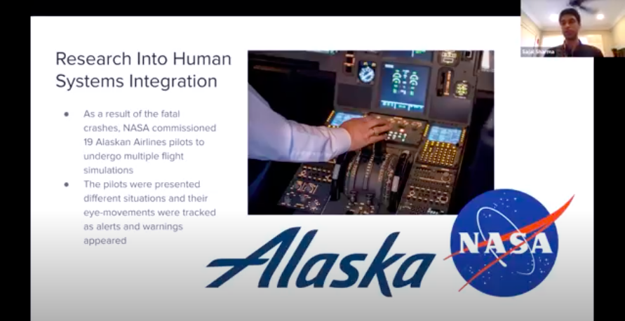
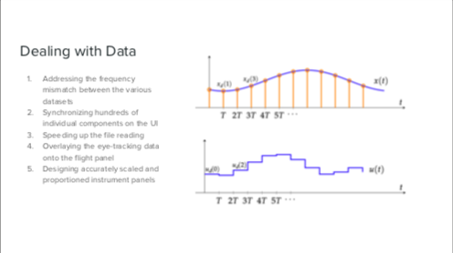

Data Science Discovery Projects#
Overview#
The Data Science Discovery Program connects undergraduates with hands-on, team-based opportunities to contribute to data research projects. Undergraduates collaborate with graduate and postdoctoral students, collaborative research institutions, inventive projects, and educational initiatives across UC Berkeley. The students’ work in the Discovery Projects earns them [Undergraduate Research Apprenticeship Program (URAP)]{.underline} credits towards their degree. The URAP program involves Berkeley undergraduates deeply within the university’s research life through direct connection with mentors. The undergraduate students experience first-hand what it means to be part of an intellectual community engaged in research.
Data science is an intrinsically interdisciplinary process with broad reach, fast-scaling capacity, and a large pool of interested students and projects. The Data Science Discovery Program, a joint effort of the [Berkeley Institute for Data Sciences]{.underline}, Division of Computing, Data Science, and Society, and the [Undergraduate Research Apprenticeship Program (URAP)]{.underline}, was created in 2015. The program was developed to offer undergraduates the opportunity to build and apply data science skills and at the same time to provide collaborators with skilled students to help address their data challenges.
Target Audience#
The Data Science Discovery Experiences model seeks to identify, connect, and scale access for undergraduate students, usually in their 3rd semester or beyond, in the data science space. It does so by creating a sustainable and diverse pipeline of projects by improving the matching and database system, fine-tuning the training and consulting services needed by graduate students, postdocs, and undergraduate research leads, and expanding internal and public communication.
Research Partner Organizations (both in the Berkeley community and in the broader community), faculty, and graduate students can all assist in making research accessible to students. Social Impact efforts with non-profit community groups offer the opportunity to help address critical community issues.
Goals#
This program provides hands-on data science training and research experience for undergraduate students, irrespective of major while allowing students to earn academic credit in the process.
The discovery projects build connections via data science between campus stakeholders/units and research partnerships with community social impact organizations.
Key Pedagogical or Curricular Strategies#
This program uses active co-construction of cooperative learning (Chiu & Linn 2011; Linn, 1995, 2000) by allowing students to work on genuine projects relevant to the “real world.” Graduate students supervise undergraduates in near-peer teaching, as students work in small groups (~5) of other students. The flexibility that arises from students being matched with projects based on their interests then enhances the opportunity for students for their professional network.
Key Diversity and Inclusion Practices and Strategies#
The Division of Computing, Data Science, and Society—of which the Data Science Discovery Projects program is a part—is committed to making Data Science inviting, engaging, and respectful for people of diverse identities, backgrounds, experiences, and perspectives. In our vision, equity and inclusion are essential elements of educating a rising generation of students, building a collaborative presence across campus, and serving society. Data Science raises fundamental issues of justice and participation in how it engages with human beings as sources of data, as analysts, and as people affected by its products. In everything the Division does, we are invested in working with our partners to shape this new field to be equitable and inclusive.
[Data Science Discovery Projects]{.underline} create opportunities for students to experience sustained teamwork on projects with high potential for collaborative impact. Diverse teams of students with different backgrounds, interests, and levels of experience are supported in working together. Collaboratives explicitly foster students’ work on long-term projects oriented toward societal impact.
The Division’s student teams recruit from disciplines all across campus to give undergraduates opportunities to lead, form connections, and shape the Berkeley Data Science community. Teams take on projects in the curriculum, internal operations, analytics, and more. Team structure changes semester to semester based on where students see opportunities for the Division to grow. A holistic, codified application review process helps teams prioritize potential members with a passion for the field and a belief in a growth mindset over pure technical skills and experience.
Links to Key Cyber Resources#
Discovery Projects program
Data Science Discovery Projects
The Discovery Projects
[Portfolio]{.underline} from Spring 2020
[[Application
Program Email [ds-discovery@berkeley.edu]{.underline}
Narrative regarding links between Component Goals, Pedagogical Strategies, and Central Elements of the Program
This program’s goals are accomplished by matching students (based on the research interests indicated in their applications) with project needs. They work closely in small teams to develop collaboration skills and applied knowledge. Being a part of a Discovery Project team brings students into direct contact with organizations that require assistance with data science problems.
Example#
Spring 2020 [Project Listings]{.underline}
{width=”3.1666666666666665in” height=”3.3958333333333335in”}{width=”2.9791666666666665in” height=”3.09375in”}
Partnership UCB department Partnership with NASA (Mountainview, CA)
Full [Project Description]{.underline}
{width=”6.5in” height=”3.638888888888889in”}
Full [Project Description]{.underline}
{width=”5.145833333333333in” height=”2.8958333333333335in”}
{width=”5.133178040244969in” height=”2.6406255468066493in”}
{width=”5.166666666666667in” height=”2.8958333333333335in”}
Best Practices for Variation Across Institutions#
Currently, at Berkeley, ~ 30% of the interested 300–400 students are matched with projects. Important factors to consider include (a) a robust database (with an underlying matching algorithm), (b) having staff to aid with the matching process, and (c) partner outreach.
Other Implementation Notes#
For partners, there are a few requests that they consider: (a) the level of support your project needs, and (b) the level of support/mentorship you can provide.
Level of support your project needs
Interview many students because some will drop out.
Students will all have different working and learning styles.
Level of support/mentorship you can provide
Your needs will be higher than you think and will take more time
than you think.
Create infrastructure for your students with specific tasks and
goals, clear expectations, and progress tracking.
References#
Chiu, J. L., & Linn, M. C. (2011). Knowledge integration and wise
engineering. Journal
of Pre-College Engineering Education Research (J-PEER), 1(1), Article 2.
http://dx.doi.org/ 10.7771/2157-9288.1026
Linn, M. C. (1995). Designing computer learning environments for engineering and
computer science: The scaffolded knowledge integration framework. Journal of Science Education and Technology, 4(2), 103–126. doi:[10.1007/BF02214052]{.underline}
Linn, M. C. (2000). Designing the knowledge integration environment. International
Journal of Science Education, 22(8), 781–796.